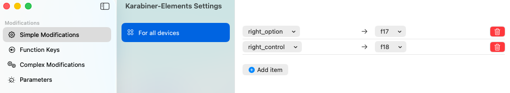
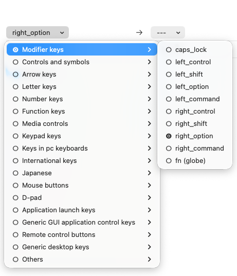
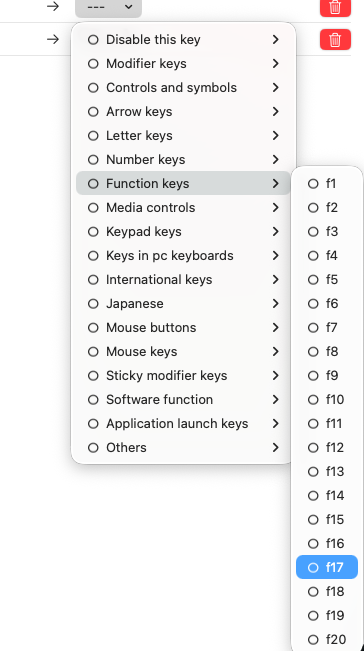
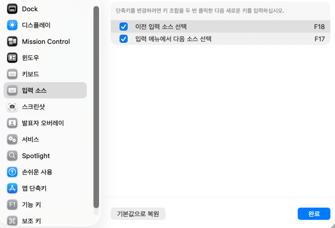
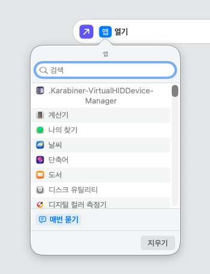
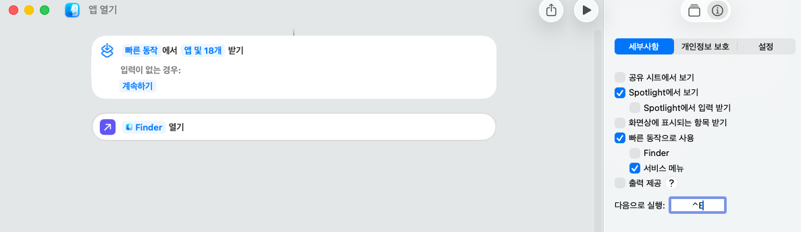
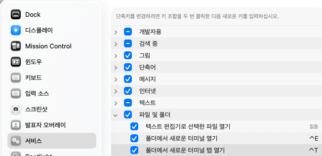
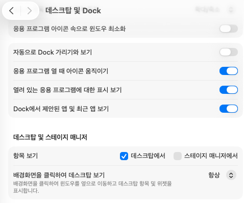
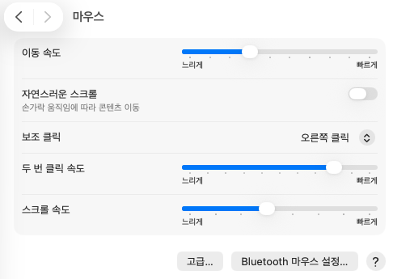

OS 설정
맥 키보드 세팅 정리: Karabiner-Elements로 우측 Option/Control, 한영 전환, 단축어까지
맥 기본 키 배열과 입력 전환 흐름이 손에 잘 안 맞을 때는, 키 하나만 바꾸는 식으로 끝내기보다 Karabiner, 입력 소스 단축키, 단축어, 서비스, Dock과 마우스 설정까지 한 번에 묶어두는 편이 훨씬 편했다.
개요
이번 세팅의 핵심은 우측 option과
control을 그냥 남겨두지 않고, 충돌이 적은
F17, F18로 바꿔서 입력 전환과 빠른
실행에 재활용하는 것이다. 이렇게 해두면 왼손은 원래 단축키를
유지하고, 오른손 쪽 키만 별도 레이어처럼 쓸 수 있다.
여기에 macOS 기본 설정까지 같이 손보면 한영 전환, 앱 실행, Finder 기준 서비스, Dock 동작이 훨씬 덜 거슬린다.
macOS 기본 단축키, 단축어 앱, 서비스 등을 간단하게 손보는 방법
1. Karabiner-Elements 설치와 권한 확인
설치는 가장 단순하게 가면 된다. Homebrew를 쓰고 있다면 아래처럼 설치하면 끝이다.
brew install --cask karabiner-elements
설치가 끝나면 Spotlight에서 Karabiner-Elements와
Karabiner-EventViewer가 함께 보인다.
EventViewer는 키가 실제로 어떤 이벤트로 들어오는지 확인할 때
꽤 유용하다.
그리고 키 리맵이 안 먹을 때 가장 먼저 볼 항목이 확장 프로그램
권한이다. 시스템 설정에서 Karabiner-VirtualHIDDevice-Manager
가 허용돼 있어야 한다.
2. 우측 Option과 Control을 F17, F18로 바꾸기
이번 세팅의 중심은 여기다. Karabiner-Elements Settings
에서 Simple Modifications만 써도 원하는 흐름을 만들
수 있다.

right_option → f17,
right_control → f18 두 개만 먼저 잡아도 체감이 크다.
세부 메뉴에서는 원래 키와 바꿀 키를 각각 골라 넣으면 된다.
스크린샷처럼 right_option과
right_control을 고르고, 대상 키는
Function keys 아래의 f17,
f18로 맞춘다.

right_option으로 선택한다.

f17,
f18처럼 충돌이 적은 쪽이 편하다.
일반 키를 다른 일반 키로 바꾸면 기존 앱 단축키와 쉽게 충돌한다.
반면 F17, F18은 대부분의 앱에서 기본
사용 빈도가 낮아서 macOS 설정이나 단축어 쪽에 안전하게 연결하기
좋다.
3. macOS 입력 소스 전환을 F17, F18에 연결하기
Karabiner에서 리맵만 해두면 끝이 아니라, 이제 macOS 기본 단축키가
그 키를 실제 기능으로 쓰게 연결해야 한다. 시스템 설정에서
키보드 → 키보드 단축키 → 입력 소스로 들어가면 된다.

이전 입력 소스 선택은
F18, 입력 메뉴에서 다음 소스 선택은
F17으로 잡혀 있다.
이렇게 해두면 오른손 우측 키만으로 한영 전환을 처리할 수 있다. 두 가지를 모두 둘 필요는 없고, 실제로는 자주 쓰는 방향 하나만 잡아도 충분하다. 다만 입력기가 여러 개라면 이전/다음 두 개를 같이 두는 편이 덜 답답하다.
4. 단축어 앱으로 앱 열기 흐름 만들기
키 리맵이 손에 익었다면 그다음은 실행 흐름을 줄이는 쪽이다.
스크린샷처럼 단축어 앱에서 새 빠른 동작을 만들고, 액션으로
앱 열기를 넣어두면 Spotlight와 서비스 메뉴 쪽으로
연결하기 좋다.

앱 열기 액션을 찾는다.

Spotlight에서 보기,
빠른 동작으로 사용, 서비스 메뉴를
켜 두면 호출 경로가 넓어진다.
여기서 중요한 건 복잡한 자동화를 만드는 게 아니라, 자주 여는 앱을 더 적은 손동작으로 호출할 수 있는 준비를 해두는 것이다. 이름을 짧게 잡아두면 Spotlight 검색에서도 훨씬 빨리 걸린다.
5. 서비스 단축키는 Finder 기준 작업만 남겨두기
시스템 설정의 키보드 단축키 → 서비스에는 생각보다
쓸 만한 항목이 많다. 나는 특히 파일과 폴더 섹션 위주로 정리해두는
편이다.

추천하는 기준은 단순하다. Finder에서 자주 하는 일만 남기고, 안 쓰는 서비스는 과감히 끄는 것이다. 서비스가 너무 많으면 Spotlight나 메뉴 탐색이 지저분해지고, 단축키 충돌도 늘어난다.
6. Dock과 마우스 설정도 같이 맞추면 체감이 더 좋아진다
입력 장치 세팅만 바꾸고 끝내기보다 Dock과 마우스도 같이 손보면 작업 흐름이 훨씬 자연스러워진다. 이 부분은 취향이 많이 타지만, 스크린샷 기준으로는 아래 조합이 꽤 무난하다.


- 열려 있는 응용 프로그램 표시를 켜 두면 Dock이 실행 상태 확인용으로 훨씬 편해진다.
- 자연스러운 스크롤은 Windows 감각이 익숙하면 처음에는 끄는 쪽이 적응이 빠르다.
- 더블 클릭 속도와 스크롤 속도는 기본값보다 약간 빠르게 두는 편이 답답함이 덜하다.
마무리
맥 세팅은 하나의 마법 같은 옵션보다, 작은 설정 몇 개를 연결해
흐름을 만드는 쪽이 훨씬 효과가 좋다. 이번 구성에서는
right_option, right_control을
F17, F18로 바꾸고, 그 위에 입력 소스
전환과 단축어, 서비스 메뉴를 얹는 방식이 핵심이었다.
처음부터 모든 걸 한 번에 바꿀 필요는 없다. 가장 체감이 큰 것은 보통 우측 키 리맵 + 입력 소스 전환 두 가지다. 이 두 개가 손에 익은 뒤에 앱 실행과 Finder 서비스까지 조금씩 얹어가면 된다.